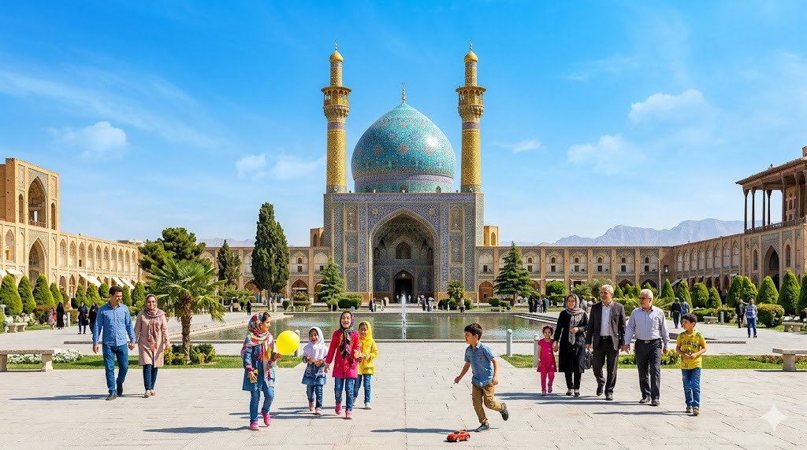
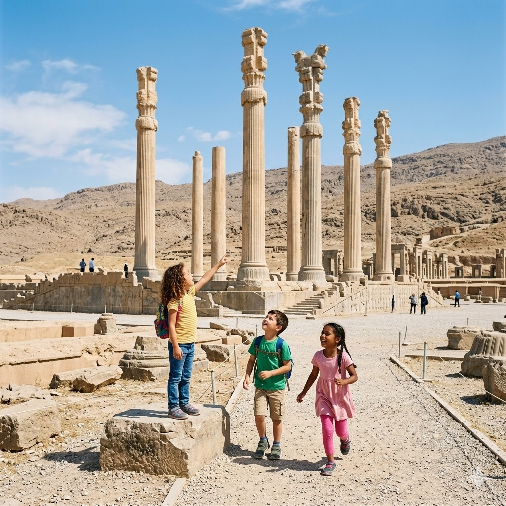
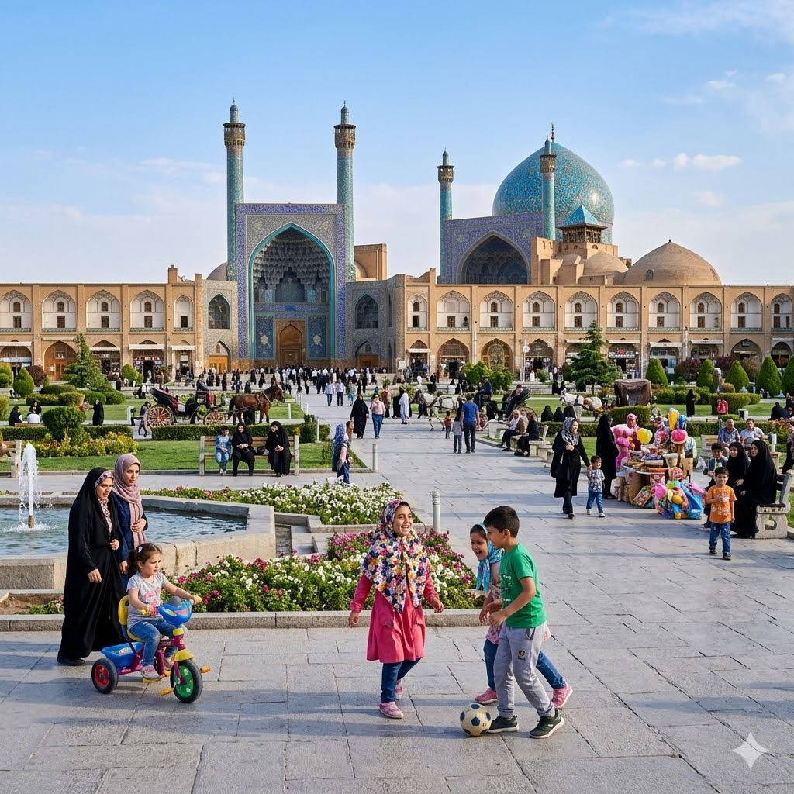
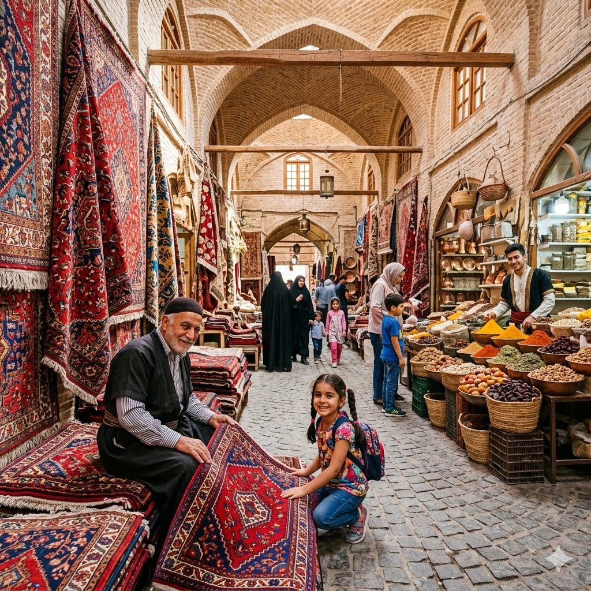
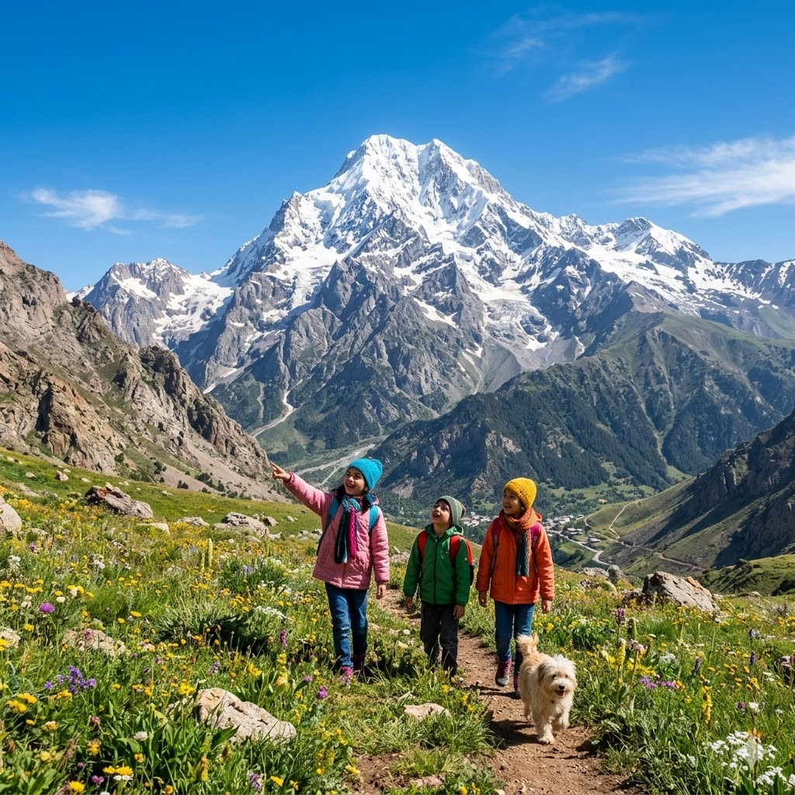
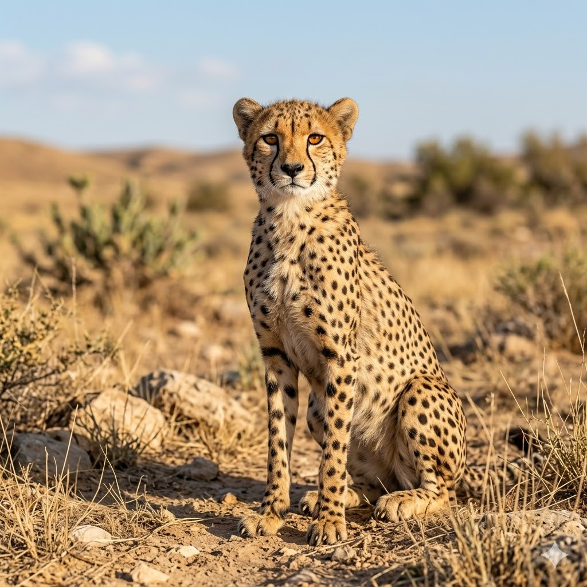
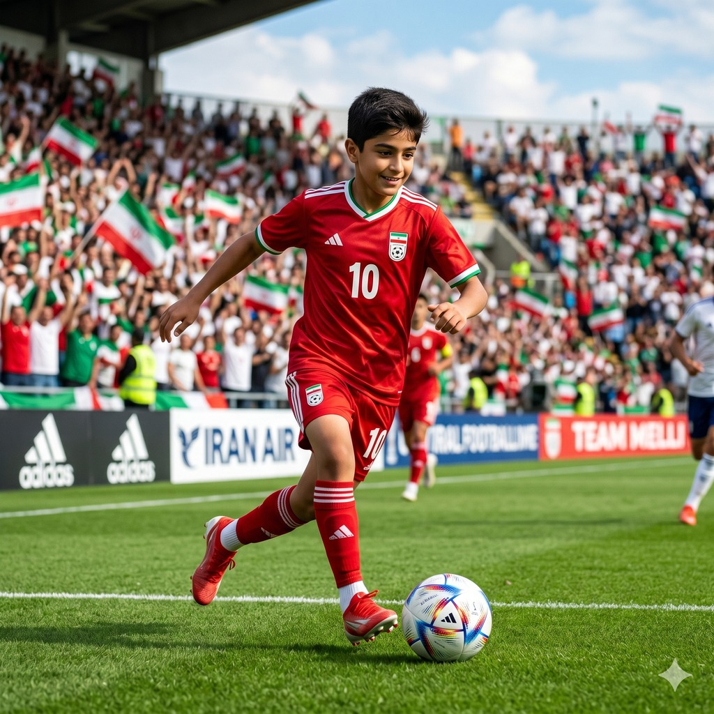
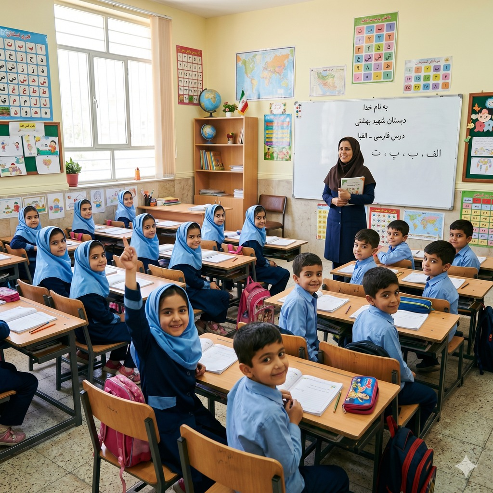

Iran
🇮🇷Mein Land bei der WM 2026

So arbeitest du mit diesem Heft: Lies die Texte zu deinem Land. Unter jedem Absatz steht eine kleine Zeile mit Folien-Wörtern. Genau diese Wörter findest du später in der App wieder und tippst sie an, wenn du deine Folien baust.
Hier stehen die wichtigsten Daten zu deinem Land. In der App baust du daraus deinen eigenen Steckbrief.
| Hauptstadt | Teheran |
| Kontinent | Asien |
| Sprache | Persisch (Farsi) |
| Währung | Iranischer Rial |
| Einwohner | rund 90 Millionen Menschen |
| Fläche | etwa 1,6 Millionen km², mehr als vier Mal so groß wie Deutschland |
| Großer Berg | der Damavand, 5.610 Meter hoch, der höchste Berg des Landes und ein Vulkan |
| Nachbarländer | unter anderem Irak, Türkei, Afghanistan, Pakistan und Turkmenistan |
Iran – Sachtext-Workbook · WM 2026 · Seite 1
Im Iran gibt es viele berühmte Orte. Diese vier solltest du kennen.

PersepolisPersepolis war früher eine prächtige Königsstadt im Süden des Landes. Sie wurde vor mehr als 2500 Jahren gebaut und ist heute sehr alt. Von den Palästen sind nur noch große Ruinen aus Stein übrig. Trotzdem kann man hohe Säulen bewundern. Persepolis gehört zum Weltkulturerbe.
Grüne Wörter für die AppKönigsstadtsehr altRuinen aus Steinhohe SäulenWeltkulturerbe
Imam-Platz in IsfahanIn der Stadt Isfahan liegt ein riesiger großer Platz. Er ist einer der größten Plätze der ganzen Welt. An seinem Rand steht eine Moschee mit einer großen blauen Kuppel. Gleich daneben beginnt ein langer Basar zum Einkaufen. Viele Menschen kommen hierher.
Grüne Wörter für die Appgroßer PlatzStadt Isfahaneine Moscheeblauen Kuppellanger Basar


Großer BasarEin Basar ist ein großer überdachter Markt mit vielen Gängen. Hier reihen sich viele Stände dicht nebeneinander. Man kann bunte Teppiche und duftende Gewürze kaufen. Auch Schmuck und Süßigkeiten gibt es zum Einkaufen. Im Basar ist es immer voll und lebendig.
Grüne Wörter für die Appüberdachter Marktviele Ständebunte TeppicheGewürzezum Einkaufen
Elburs-GebirgeDas Elburs-Gebirge liegt im Norden des Landes. Es hat sehr hohe Berge. Hier steht auch der höchste Berg des Landes, der Damavand. Seine Spitze ist oft mit Schnee bedeckt, sogar im Sommer. Viele Menschen gehen hier gern wandern.
Grüne Wörter für die Apphohe Bergeim Nordenhöchste Bergmit Schnee bedecktwandern

Iran – Sachtext-Workbook · WM 2026 · Seite 2
Diese Tiere leben im Iran und sind ganz besonders.

Persischer LeopardDer Persische Leopard ist eine große Raubkatze. Sein Fell ist hellbraun und überall mit dunklen Flecken bedeckt. Er lebt in den Bergen und schleicht sich gut an seine Beute heran. Als guter Jäger fängt er zum Beispiel Wildziegen. Leider ist er selten geworden.
Grüne Wörter für die Appgroße Raubkatzedunklen Fleckenlebt in den Bergenguter Jägerselten geworden
Asiatischer GepardDer Asiatische Gepard ist eine schlanke Katze mit langen Beinen. Er kann sehr schnell rennen und ist eines der schnellsten Tiere überhaupt. Sein Fell hat viele kleine Flecken. Diesen Gepard gibt es heute nur noch im Iran. Er ist leider stark bedroht.
Grüne Wörter für die Appschlanke Katzesehr schnellkleine Fleckennur noch im Iranstark bedroht


WildeselDer Wildesel lebt frei in der trockenen Steppe des Landes. Sein Fell ist sandfarben, so passt er gut in die Landschaft. Bei Gefahr kann er schnell laufen. Wildesel leben gern zusammen in Herden. So passen sie gemeinsam besser auf.
Grüne Wörter für die Apptrockenen Steppesandfarbenschnell laufenin Herdengemeinsam
Iran – Sachtext-Workbook · WM 2026 · Seite 3
In der App kannst du beim Essen das Foto nehmen oder dein Gericht selbst malen.
Tschelo KebabTschelo Kebab ist das Nationalgericht des Landes. Dabei wird mariniertes Fleisch auf einem Grill zubereitet. Das gegrillte Fleisch kommt frisch auf den Teller. Dazu gibt es lockeren Reis. Oft wird der Reis mit gelbem Safran gewürzt.
Grüne Wörter für die AppNationalgerichtauf einem Grillgegrillte Fleischlockeren Reismit gelbem Safran

Ghormeh SabziGhormeh Sabzi ist ein grüner Eintopf und ein sehr beliebtes Gericht. Er wird aus vielen frischen Kräutern gekocht. Im Topf sind außerdem weiche Bohnen und kleine Fleischstücke. Dazu wird immer lockerer Reis gegessen. Der Eintopf schmeckt würzig.
Grüne Wörter für die Appgrüner Eintopfbeliebtes Gerichtfrischen KräuternBohnenlockerer Reis
Safran-ReisReis ist die wichtigste Beilage in der persischen Küche. Der lockere Reis wird vorsichtig gedämpft. Oft färbt man ihn mit Safran goldgelb. Am Boden des Topfes bildet sich eine knusprige Kruste. Diese Kruste mögen viele besonders gern.
Grüne Wörter für die Appwichtigste Beilagelockere Reismit Safrangoldgelbknusprige Kruste

Iran – Sachtext-Workbook · WM 2026 · Seite 4
★ Wahl-Thema: Fußball oder Kinderalltag (mindestens eins)
⚽ Gut zu wissen
Die Fußball-Nationalmannschaft des Iran heißt Team Melli. Das bedeutet einfach die Nationalmannschaft. Die Spieler tragen oft rote Trikots. Das Team gehört zu den besten Mannschaften in Asien. Auch bei der WM 2026 ist der Iran wieder dabei.
Grüne Wörter für die AppTeam MelliNationalmannschaftrote Trikotsbesten Mannschaften in Asienbei der WM 2026
🌟 Profi-Wissen
Ein bekannter Spieler ist Mehdi Taremi. Er ist ein guter Stürmer und spielt in Italien bei Inter Mailand. Im Iran kennen ihn fast alle Fußballfans. Ali Daei war früher die große Legende des Irans, er hielt lange Zeit den Rekord für die meisten Länderspieltore weltweit.
Grüne Wörter für die AppMehdi TaremiInter MailandAli Daei LegendeTeam Melliasiatische Qualifikation

Iran – Sachtext-Workbook · WM 2026 · Seite 5
★ Wahl-Thema: Fußball oder Kinderalltag (mindestens eins)
Schule im IranAuch im Iran gehen die Kinder jeden Tag in die Schule. Dort lernen sie lesen und rechnen, genau wie du. Sie schreiben in der persischen Schrift, die von rechts nach links geht. Sie sitzen im Klassenraum und hören der Lehrerin zu. Am Nachmittag machen sie Hausaufgaben.
Grüne Wörter für die Appin die Schulelesen und rechnenpersischen Schriftim KlassenraumHausaufgaben
Nouruz, das NeujahrsfestNouruz ist das große Neujahrsfest und bedeutet neuer Tag. Es wird im Frühling gefeiert, wenn die Natur erwacht. Nouruz ist ein schönes Familienfest, bei dem alle zusammenkommen. In der Mitte steht ein bunter Tisch mit besonderen Dingen. Die Kinder freuen sich über Geschenke.
Grüne Wörter für die AppNeujahrsfestim FrühlingFamilienfestein bunter TischGeschenke

Iran – Sachtext-Workbook · WM 2026 · Seite 6